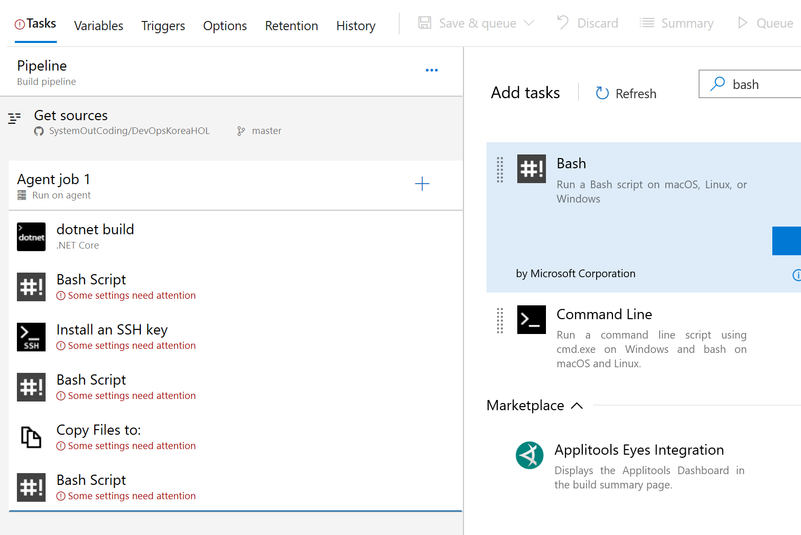
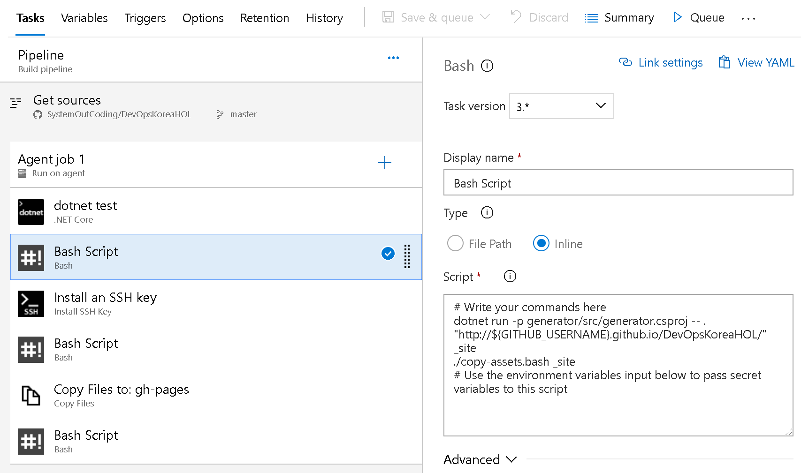
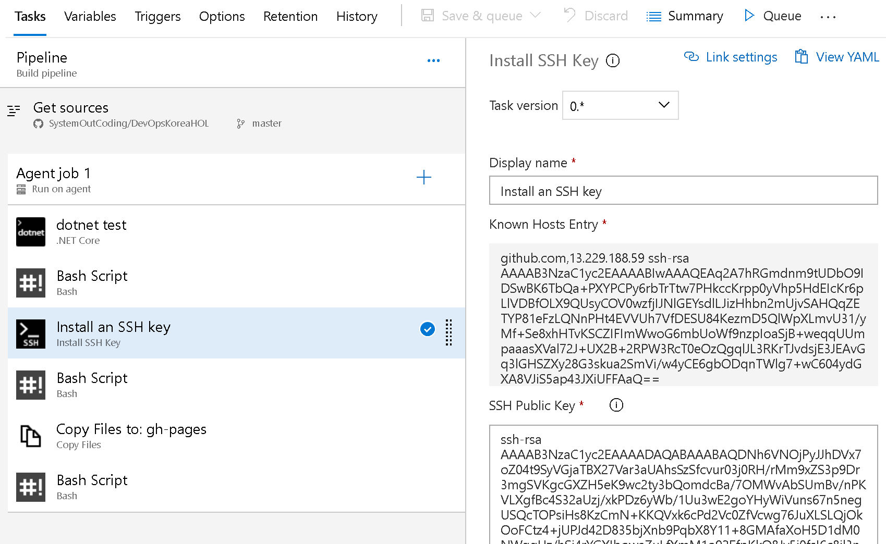
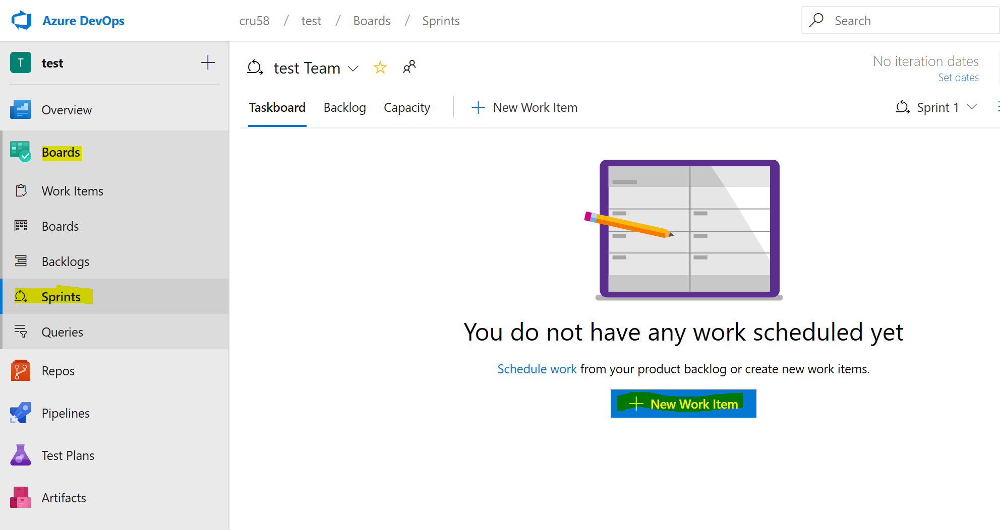
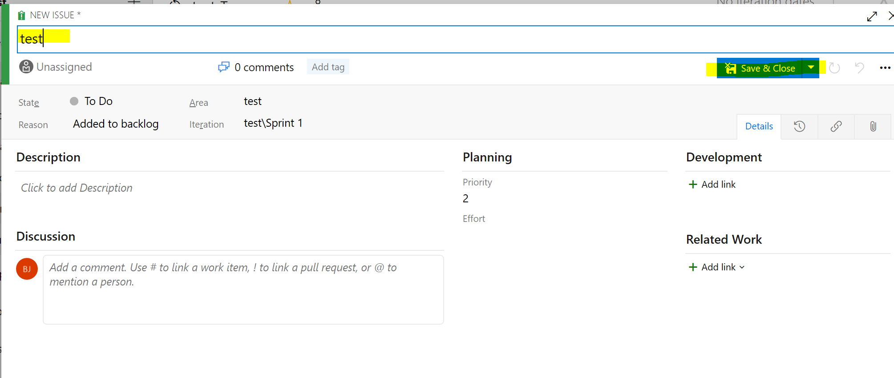
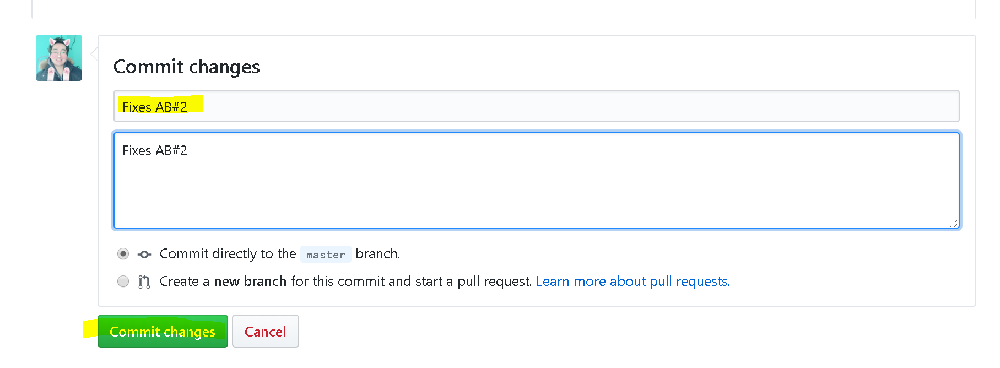
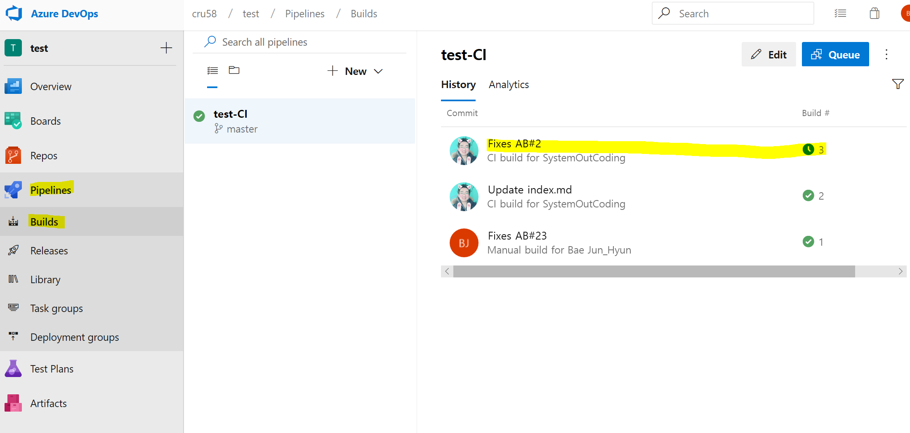

HOL의 목표
- Azure DevOps - GitHub Connection 을 활용
- Git Commit을 Trigger로 Dashboard Task 처리
- GitHub Integration with Azure Pipelines 통합 진행
- GitHub integration with Azure Boards 진행, Commit or Push 를 통해 TASK 진행 여부 확인
- Azure Pipelines를 통해 github.io 에서 확인 가능
준비사항
- Git-Bash 다운로드 (http://git-scm.com)
- Github ID (http://github.com)
- Azure DevOps ID (http://dev.azure.com)
예제 설명
- 'MarkDown 파일을 작성, Html로 퍼블리싱하는 예제'를 Azure DevOps Pipeline을 통해 자동화
Senario 요약
- Git-Bash RSA 키 발급
- Github 에서 특정 프로젝트 Fork
- Azure DevOps ID + 프로젝트 생성
- Github 과 Azure DevOps 연동
- Github 의 Commit시, Azure DevOps Pipeline을 통해 프로젝트를 자동으로 빌드
- 빌드 이후 Github으로 자동으로 Push
- Github 의 Commit을 통해, Azure DevOps Board에서 Task Auto Complete 처리
HOL
Git-Bash 에서
- Git-bash 실행
- ssh-keygen -t rsa -f devopskrkeyfile 명령어 실행
- passphrase(비밀번호) 입력 - 엔터로 넘어가도 무방
- 2번 명령어를 실행한 폴더에서 devopskrkeyfile, devopskrkeyfile.pub 2개의 파일 생성 확인
- cat devopskrkeyfile.pub 명령어를 통해 출력값 복사
Github (http://github.com)에서
- http://github.com 에서 SignUp을 통해 회원가입
- http://github.com 에서 SignIn을 통해 로그인
- https://github.com/ianychoi/DevOpsKoreaHOL 페이지로 이동
- 우측 상단 "FORK" 클릭
- 자신의 계정으로 FORK
- https://github.com/자신의_ID/DevOpsKoreaHOL 가 생성 됨을 확인
- https://github.com/자신의_ID/DevOpsKoreaHOL 에서 "Settings" 메뉴로 이동
- 왼쪽 메뉴 하단 Deploy keys 선택
- "Add Deploy Key" 버튼 선택
- Title(임의 작성), Key(RSA키 내용 복사), Allow write access 체크박스 체크후 "Add Key" 버튼 선택
- SSH 키가 등록 되었음을 확인

Azure DevOps 에서
Pipelines 구성 1
- http://dev.azure.com 에서 아이디를 생성후 StartFree 링크로 이동
- 약관 동의 3.Create a Project get Started 항목에서 Project Name, Public 설정후 Project 생성
- 왼쪽 하단 Project Setting 메뉴 선택
- Board >> Git Connections >> Connect your GitHub account 메뉴 선택
- Github 로그인을 통해 Azure Board 동기화
- Github 에서 Fork 해뒀던 '자신의_ID/DevOpsKoreaHOL' 프로젝트 지정후 Save
- Github Connection 페이지에서ㅕ Github과 연동이 되었는지 확인
Pipelines 구성 2
- Azure DevOps 왼쪽 메뉴에서 파란색 아이콘인 Pipelines 선택
- 하위 메뉴의 Build 선택후 오른쪽 메뉴에서 New Pipeline 버튼 선택
- 오른쪽 새로 나타난 블레이드 메뉴에서 NEW+ 버튼 >> New Build PipeLine 선택
- Connect 항목에서, 항목단 아래의 'Use The Classic Editor' 선택
- Select Source 항목에서 Github 을 선택
- Authorize using OAUTH 버튼을 선택
- Repository를 기존에 Fork 한 프로젝트를 선택
- Default Branch Build 항목은 Master를 선택
- Continue 버튼 선택
- Select a template 에서 Empty Job 선택
Pipelines 구성 3
- Task >> Pipeline >> Get Sources >> Agent Job 1 이 구성되어 있는지 확인
- Agent Job 1 블록 우측의 +버튼을 선택
- Add Task에서 Search를 활용하여 Task를 추가함(추가항목은 이후 참조)
- ".Net Core"
- "Bash"
- "Install SSH Key"
- "Bash"
- "Copy Files"
- "Bash"
- 위 항목을 차례대로 TASK 추가.
- Agent Job 1 이하, .NetCore, Bash, Install SSH Key , Bash, Copy Files, Bash 순서로 구성되었는지 확인. 
Pipelines 구성 4
- 1 DotNet Build 항목에서
- Command 를 Build >> Test로 변경
- Path to project(s) >> generator 입력

Pipelines 구성 계속
- 2 Bash 항목에서
- Type를 Inline으로 선택
- 다음을 입력
# Write your commands here
dotnet run -p generator/src/generator.csproj -- . "http://${GITHUB_USERNAME}.github.io/DevOpsKoreaHOL/" _site
./copy-assets.bash _site
# Use the environment variables input below to pass secret variables to this script

Pipelines 구성 계속
- 3 Install SSH Key 항목에서
- Known Hosts Entry 항목에 known_hosts 파일의 내용을 복사
13.229.188.59 ssh-rsa AAAAB3NzaC1yc2EAAAABIwAAAQEAq2A7hRGmdnm9tUDbO9IDSwBK6TbQa+PXYPCPy6rbTrTtw7PHkccKrpp0yVhp5HdEIcKr6pLlVDBfOLX9QUsyCOV0wzfjIJNlGEYsdlLJizHhbn2mUjvSAHQqZETYP81eFzLQNnPHt4EVVUh7VfDESU84KezmD5QlWpXLmvU31/yMf+Se8xhHTvKSCZIFImWwoG6mbUoWf9nzpIoaSjB+weqqUUmpaaasXVal72J+UX2B+2RPW3RcT0eOzQgqlJL3RKrTJvdsjE3JEAvGq3lGHSZXy28G3skua2SmVi/w4yCE6gbODqnTWlg7+wC604ydGXA8VJiS5ap43JXiUFFAaQ==
- SSH Public Key 항목에 devopskrkeyfile.pub 파일의 내용을 복사
- SSH Passphrase 항목에 키 생성시 입력한 비밀번호를 입력(없을시 빈칸)
- SSH Key 항목에 devopskrkeyfile 파일을 선택하여 업로드(예: ssh-keygen을 실행했던 폴더 / 디폴트 파일 (-f 옵션이 없을 때: C:\Users\사용자.ssh\id_rsa)
Pipelines 구성 계속
- 4 Bash 항목에서
- Type를 Inline으로 선택
- 다음을 입력(자신의 .Git으로 변경)
# Write your commands here
git config --global user.name "DevOps CI"
git config --global user.email "devops@devops.kr"
echo -e "Host github.com\n\tStrictHostKeyChecking no\n" >> ~/.ssh/config
chmod 600 ~/.ssh/config
git clone -b gh-pages git@github.com:${GITHUB_USERNAME}/DevOpsKoreaHOL.git gh-pages
echo "clone success"
# Use the environment variables input below to pass secret variables to this script

Pipelines 구성 계속
- 5 Copy Files 항목에서
- Source Folder에서 다음을 입력
_site - Contents에서 다음을 입력
** - Target Folder에서 다음일 입력
gh-pages - Advanced 항목에서 Overwrite 항목 체크

Pipelines 구성 계속
- 6 Bash 항목에서
- Type를 Inline으로 선택
- Script 항목에서 다음일 입력
cd gh-pages
git add .
git commit -a -m "Update HTMLs"
git push origin gh-pages:gh-pages
echo "push success"
# Use the environment variables input below to pass secret variables to this script

Variables 세팅
GITHUB_USERNAME 변수 생성 Values는 자신의 Git ID

Commit Trigger 세팅

Board 에서 Commit에 따른 Auto Complete
-
Board 항목에서 새로운 워크 아이템을 추가 합니다. 
-
임의의 Issue 를 생성 합니다. 
-
새로운 TASK 를 생성후 TASK #Number를 확인 합니다. 예제에서는 2번 입니다.

-
Gibhub에서 임의의 파일을 수정후 'Fixes AB#2' 라는 Commit 을 합니다. 
-
Github 에서 커밋 이후, Azure DevOps에서 자동으로 Build 가 발생하는것을 확인 할 수 있습니다. 